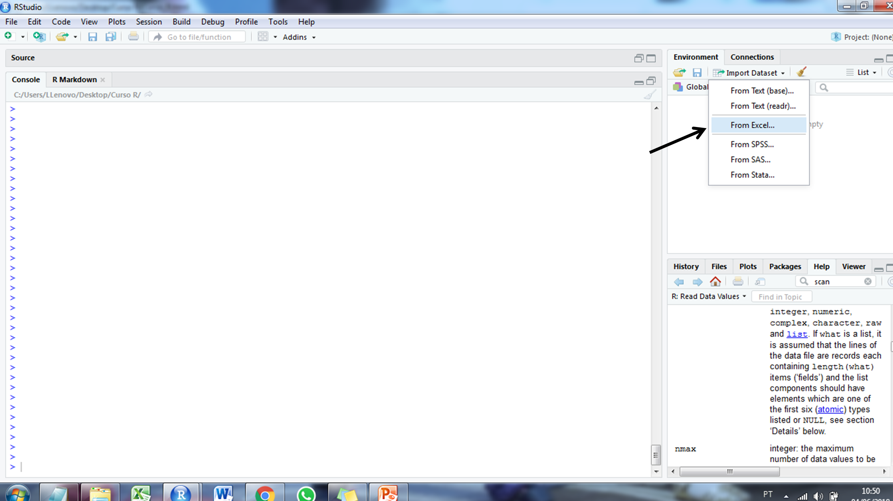
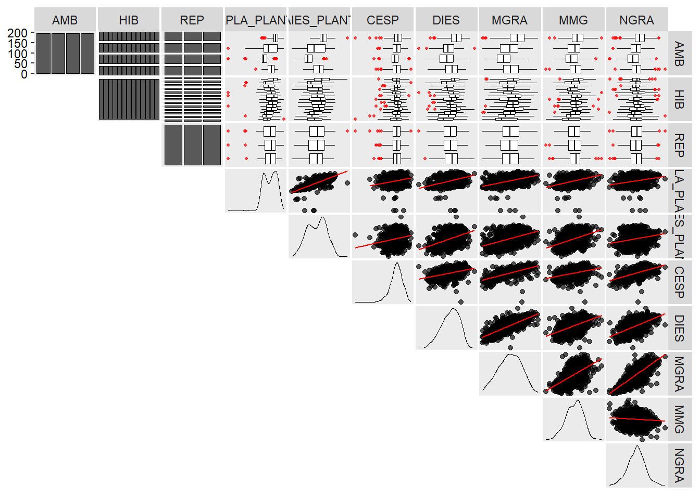

# meu computador (mudar de acordo)
setwd("D:/Desktop/UFSC/aulas/classes/RGV410046/data")3. Dados
Diretório
Pacotes
library(rio)
library(tidyverse)
library(metan)
library(DataExplorer)Importação
Pacote rio
O pacote rio é um pacote R relativamente recente utilizado para importação e exportação de dados. Ele faz suposições sobre o formato do arquivo (veja os formatos suportados aqui), ou seja, adivinha o formato do arquivo que você está tentando importar e, consequentemente, aplica funções de importação apropriadas a esse formato. Tudo isso é feito com a função import().
Do excel
Um arquivo
# primeira planilha do excel
df_excel <- import("df_excel.xlsx")
df_excel RAD REP AF_M2 AF MST
1 50 1 5.02 5016.429 12.30785
2 50 2 3.65 3648.359 10.73315
3 50 3 3.93 3925.333 10.86140
4 50 4 4.71 4705.269 10.97850
5 70 1 6.12 6118.425 15.75180
6 70 2 5.61 5614.233 13.30495
7 70 3 5.11 5109.944 13.88435
8 70 4 4.98 4975.857 13.09225
9 100 1 5.46 5464.528 16.92240
10 100 2 5.55 5551.951 14.93085
11 100 3 5.72 5723.849 16.12900
12 100 4 5.87 5869.697 15.78145# uma planilha específica
# converter para tibble
df_excel2 <-
import("df_excel.xlsx",
sheet = "traits",
setclass = "tbl")
df_excel2# A tibble: 12 × 2
AF MST
<dbl> <dbl>
1 5016. 12.3
2 3648. 10.7
3 3925. 10.9
4 4705. 11.0
5 6118. 15.8
6 5614. 13.3
7 5110. 13.9
8 4976. 13.1
9 5465. 16.9
10 5552. 14.9
11 5724. 16.1
12 5870. 15.8Vários arquivos
(padrao <- list.files(pattern = "df_excel"))[1] "df_excel.xlsx" "df_excel2.xlsx" "df_excel3.xlsx"df_lista <- import_list(file = padrao)
str(df_lista)List of 3
$ df_excel :'data.frame': 12 obs. of 5 variables:
..$ RAD : num [1:12] 50 50 50 50 70 70 70 70 100 100 ...
..$ REP : num [1:12] 1 2 3 4 1 2 3 4 1 2 ...
..$ AF_M2: num [1:12] 5.02 3.65 3.93 4.71 6.12 5.61 5.11 4.98 5.46 5.55 ...
..$ AF : num [1:12] 5016 3648 3925 4705 6118 ...
..$ MST : num [1:12] 12.3 10.7 10.9 11 15.8 ...
..- attr(*, "filename")= chr "df_excel.xlsx"
$ df_excel2:'data.frame': 12 obs. of 5 variables:
..$ RAD : num [1:12] 50 50 50 50 70 70 70 70 100 100 ...
..$ REP : num [1:12] 1 2 3 4 1 2 3 4 1 2 ...
..$ AF_M2: num [1:12] 5.02 3.65 3.93 4.71 6.12 5.61 5.11 4.98 5.46 5.55 ...
..$ AF : num [1:12] 5016 3648 3925 4705 6118 ...
..$ MST : num [1:12] 12.3 10.7 10.9 11 15.8 ...
..- attr(*, "filename")= chr "df_excel2.xlsx"
$ df_excel3:'data.frame': 12 obs. of 5 variables:
..$ RAD : num [1:12] 50 50 50 50 70 70 70 70 100 100 ...
..$ REP : num [1:12] 1 2 3 4 1 2 3 4 1 2 ...
..$ AF_M2: chr [1:12] "5,02" "3,65" "3,93" "4,71" ...
..$ AF : chr [1:12] "5016,43" "3648,36" "3925,33" "4705,27" ...
..$ MST : chr [1:12] "12,31" "10,73" "10,86" "10,98" ...
..- attr(*, "filename")= chr "df_excel3.xlsx"df_lista_bind <- import_list(file = padrao, rbind = TRUE)
df_lista_bind RAD REP AF_M2 AF MST _file
1 50 1 5.02 5016.42875 12.30785 df_excel.xlsx
2 50 2 3.65 3648.3589 10.73315 df_excel.xlsx
3 50 3 3.93 3925.33325 10.8614 df_excel.xlsx
4 50 4 4.71 4705.2685 10.9785 df_excel.xlsx
5 70 1 6.12 6118.4251 15.7518 df_excel.xlsx
6 70 2 5.61 5614.23305 13.30495 df_excel.xlsx
7 70 3 5.11 5109.94435 13.88435 df_excel.xlsx
8 70 4 4.98 4975.85695 13.09225 df_excel.xlsx
9 100 1 5.46 5464.528 16.9224 df_excel.xlsx
10 100 2 5.55 5551.95115 14.93085 df_excel.xlsx
11 100 3 5.72 5723.84875 16.129 df_excel.xlsx
12 100 4 5.87 5869.69745 15.78145 df_excel.xlsx
13 50 1 5.02 5016.42875 12.30785 df_excel2.xlsx
14 50 2 3.65 3648.3589 10.73315 df_excel2.xlsx
15 50 3 3.93 3925.33325 10.8614 df_excel2.xlsx
16 50 4 4.71 4705.2685 10.9785 df_excel2.xlsx
17 70 1 6.12 6118.4251 15.7518 df_excel2.xlsx
18 70 2 5.61 5614.23305 13.30495 df_excel2.xlsx
19 70 3 5.11 5109.94435 13.88435 df_excel2.xlsx
20 70 4 4.98 4975.85695 13.09225 df_excel2.xlsx
21 100 1 5.46 5464.528 16.9224 df_excel2.xlsx
22 100 2 5.55 5551.95115 14.93085 df_excel2.xlsx
23 100 3 5.72 5723.84875 16.129 df_excel2.xlsx
24 100 4 5.87 5869.69745 15.78145 df_excel2.xlsx
25 50 1 5,02 5016,43 12,31 df_excel3.xlsx
26 50 2 3,65 3648,36 10,73 df_excel3.xlsx
27 50 3 3,93 3925,33 10,86 df_excel3.xlsx
28 50 4 4,71 4705,27 10,98 df_excel3.xlsx
29 70 1 6,12 6118,43 15,75 df_excel3.xlsx
30 70 2 5,61 5614,23 13,30 df_excel3.xlsx
31 70 3 5,11 5109,94 13,88 df_excel3.xlsx
32 70 4 4,98 4975,86 13,09 df_excel3.xlsx
33 100 1 5,46 5464,53 16,92 df_excel3.xlsx
34 100 2 5,55 5551,95 14,93 df_excel3.xlsx
35 100 3 5,72 5723,85 16,13 df_excel3.xlsx
36 100 4 5,87 5869,70 15,78 df_excel3.xlsxPlanilha separada por vírgulas
df_csv <- import("df_csv.csv")
df_csv RAD REP AF_M2 AF MST
1 50 1 5.02 5016.43 12.31
2 50 2 3.65 3648.36 10.73
3 50 3 3.93 3925.33 10.86
4 50 4 4.71 4705.27 10.98
5 70 1 6.12 6118.43 15.75
6 70 2 5.61 5614.23 13.30
7 70 3 5.11 5109.94 13.88
8 70 4 4.98 4975.86 13.09
9 100 1 5.46 5464.53 16.92
10 100 2 5.55 5551.95 14.93
11 100 3 5.72 5723.85 16.13
12 100 4 5.87 5869.70 15.78Arquivos de texto
df_txt <- import("df_txt.txt")
df_txt RAD REP AF_M2 AF MST
1 50 1 5.02 5016.43 12.31
2 50 2 3.65 3648.36 10.73
3 50 3 3.93 3925.33 10.86
4 50 4 4.71 4705.27 10.98
5 70 1 6.12 6118.43 15.75
6 70 2 5.61 5614.23 13.30
7 70 3 5.11 5109.94 13.88
8 70 4 4.98 4975.86 13.09
9 100 1 5.46 5464.53 16.92
10 100 2 5.55 5551.95 14.93
11 100 3 5.72 5723.85 16.13
12 100 4 5.87 5869.70 15.78Google sheets
url <- "https://docs.google.com/spreadsheets/d/1b-Sj9l-VwJ-Oy-hFx7j8twsA5oC6-Fr9ukllywfim0E"
df_gsheet <- import(url, dec = ",")
df_gsheet RAD,REP,AF_M2,AF,MST
1 50,1,"5,02","5016,43","12,31"
2 50,2,"3,65","3648,36","10,73"
3 50,3,"3,93","3925,33","10,86"
4 50,4,"4,71","4705,27","10,98"
5 70,1,"6,12","6118,43","15,75"
6 70,2,"5,61","5614,23","13,3"
7 70,3,"5,11","5109,94","13,88"
8 70,4,"4,98","4975,86","13,09"
9 100,1,"5,46","5464,53","16,92"
10 100,2,"5,55","5551,95","14,93"
11 100,3,"5,72","5723,85","16,13"
12 100,4,"5,87","5869,7","15,78"Outros formatos (Avançado)
SPSS
O arquivo ".sav" de exemplo foi baixado deste site
df_spss <- import("df_spss.sav", setclass = "tbl")
df_spss# A tibble: 306 × 59
IDnumber age sex workstat increg incmnth incwk housing living homepay
<dbl> <dbl> <dbl> <dbl> <dbl> <dbl> <dbl> <dbl> <dbl> <dbl>
1 20160186 19 2 3 1 0 0 2 1 1
2 20160011 17 2 0 0 0 0 2 1 1
3 20160081 18 2 3 1 300 69.2 2 1 1
4 20160155 18 2 0 0 0 0 2 1 1
5 20160182 19 2 0 1 600 138. 2 1 4
6 20160027 17 2 0 0 0 0 2 1 4
7 20160188 19 2 0 0 0 0 2 1 99
8 20160013 17 2 0 0 0 0 2 1 1
9 20160214 20 2 0 1 1500 346. 3 2 4
10 20160216 20 2 3 1 400 92.3 3 2 1
# ℹ 296 more rows
# ℹ 49 more variables: homecost <dbl>, homecostwk <dbl>, mobile <dbl>,
# mobilepay <dbl>, mobilecost <dbl>, mobilecostwk <dbl>, transport <dbl>,
# food <dbl>, entertain <dbl>, privhlth <dbl>, fs_illness <dbl>,
# fs_accident <dbl>, fs_death <dbl>, fs_mtlillness <dbl>,
# fs_disability <dbl>, fs_divsep <dbl>, fs_nogetjob <dbl>,
# fs_lossofjob <dbl>, fs_alcdrug <dbl>, fs_witviol <dbl>, …DBF
O arquivo ".dbf" de exemplo foi baixado deste site
df_dbf <- import("df_dbf.dbf", setclass = "tbl")
df_dbf# A tibble: 67 × 15
ID CATCOUNT AGRPCOUNT PGRPCOUNT ORDER CODE NAME THUMBNAIL IMAGE PRICE
<int> <int> <int> <int> <int> <chr> <chr> <chr> <chr> <dbl>
1 87 2 0 0 87 1 Asso… graphics… grap… 0
2 26 3 0 0 26 CPKG Chri… graphics… grap… 0
3 27 3 0 0 27 CHOC Choc… graphics… grap… 0
4 28 3 0 0 28 PASTEL Past… graphics… grap… 0
5 29 2 0 0 29 CKR-1001 Chec… graphics… grap… 15.8
6 30 3 0 0 30 C Chri… graphics… grap… 0
7 31 3 0 0 31 TBC01 Truf… graphics… grap… 19.2
8 32 2 0 0 32 BD01 Bisc… graphics… grap… 28.8
9 33 1 0 0 33 DS02 Dres… graphics… grap… 24.0
10 34 1 0 0 34 AB01 Apri… graphics… grap… 38.0
# ℹ 57 more rows
# ℹ 5 more variables: COST <dbl>, DESC <chr>, WEIGHT <dbl>, TAXABLE <lgl>,
# ACTIVE <lgl>ODS
df_ods <- import("df_ods.ods")
df_ods RAD REP AF_M2 AF MST
1 50 1 5.02 5016.429 12.30785
2 50 2 3.65 3648.359 10.73315
3 50 3 3.93 3925.333 10.86140
4 50 4 4.71 4705.269 10.97850
5 70 1 6.12 6118.425 15.75180
6 70 2 5.61 5614.233 13.30495
7 70 3 5.11 5109.944 13.88435
8 70 4 4.98 4975.857 13.09225
9 100 1 5.46 5464.528 16.92240
10 100 2 5.55 5551.951 14.93085
11 100 3 5.72 5723.849 16.12900
12 100 4 5.87 5869.697 15.78145Rdata
df_rdata <- readRDS("df_r.RData")
df_rdata HIBRIDO BLOCO ALT_PLANT ALT_ESP
1 H1 I 3.002 1.878
2 H1 II 2.974 1.834
3 H1 III 2.814 1.674
4 H2 I 2.104 0.910
5 H2 II 2.120 1.034
6 H2 III 1.924 1.018
7 H3 I 2.132 1.052
8 H3 II 2.126 1.012
9 H3 III 2.182 0.992Funções R base
A função read.table() lê um arquivo em formato de tabela (.txt, .csv) e cria um data frame a partir dele.
(dados <- read.table("df_txt.txt", header = TRUE))
(dados <- read.table("df_csv.csv", header = TRUE, sep = ";"))
# Argumento header = TRUE indica a existência de cabeçalhoRstudio
A forma mais comum do pesquisador digitar seus dados é através de planilhas eletrônicas do Excel. Para carregar esses dados, basta ir em Import Dataset na área de trabalho. O passo a passo está descrito abaixo:



Exportar
# exportar para excel
export(df_excel, "exportado.xlsx")
# exportar para txt
export(df_excel, "exportado.txt")
# exportar para csv
export(df_excel, "exportado.csv")
# exportar várias planilhas para um arquivo
export(
list(
plan1 = df_excel,
plan2 = df_excel2
),
file = "minha_lista.xlsx"
)Tutorial Importação e Exportação
Dados tidy
Conjuntos de dados organizados são fáceis de manipular, modelar e visualizar, e possuem uma estrutura específica: cada variável é uma coluna, cada observação é uma linha e cada tipo de unidade observacional é uma tabela (Wickham, 2014)1
Mesmos dados, diferentes formas
Nesta seção você aprenderá organizar dados no R no formato tidy. Colocar seus dados nesse formato requer algum trabalho inicial, mas esse trabalho compensa a longo prazo. Aqui, um foco especial será dado nas funções do pacote tidyr e do pacote metan. Se você quiser saber mais sobre a teoria por tras dos dados tidy, poderá apreciar o artigo Tidy Data.
Você pode representar os mesmos dados várias maneiras. O exemplo abaixo mostra os mesmos dados organizados de quatro maneiras diferentes. Cada conjunto de dados mostra os mesmos valores de duas variáveis (ALT_ESP, ALT_PLANT) mensuradas em três híbridos (HIBRIDO), considerando três repetições (BLOCOS).
df <- import_list("examples_data.xlsx")
df$df1 HIBRIDO BLOCO ALT_PLANT ALT_ESP
1 H1 I 3.002 1.878
2 H1 II 2.974 1.834
3 H1 III 2.814 1.674
4 H2 I 2.104 0.910
5 H2 II 2.120 1.034
6 H2 III 1.924 1.018
7 H3 I 2.132 1.052
8 H3 II 2.126 1.012
9 H3 III 2.182 0.992df$df2 HIBRIDO BLOCO VARIAVEL VALOR
1 H1 I ALT_PLANT 3.002
2 H1 I ALT_ESP 1.878
3 H1 II ALT_PLANT 2.974
4 H1 II ALT_ESP 1.834
5 H1 III ALT_PLANT 2.814
6 H1 III ALT_ESP 1.674
7 H2 I ALT_PLANT 2.104
8 H2 I ALT_ESP 0.910
9 H2 II ALT_PLANT 2.120
10 H2 II ALT_ESP 1.034
11 H2 III ALT_PLANT 1.924
12 H2 III ALT_ESP 1.018
13 H3 I ALT_PLANT 2.132
14 H3 I ALT_ESP 1.052
15 H3 II ALT_PLANT 2.126
16 H3 II ALT_ESP 1.012
17 H3 III ALT_PLANT 2.182
18 H3 III ALT_ESP 0.992df$df3 HIBRIDO ALT_ESP_I ALT_ESP_II ALT_ESP_III ALT_PLANT_I ALT_PLANT_II
1 H1 1.878 1.834 1.674 3.002 2.974
2 H2 0.910 1.034 1.018 2.104 2.120
3 H3 1.052 1.012 0.992 2.132 2.126
ALT_PLANT_III
1 2.814
2 1.924
3 2.182df$df4 HIBRIDO name I II III
1 H1 ALT_PLANT 3.002 2.974 2.814
2 H1 ALT_ESP 1.878 1.834 1.674
3 H2 ALT_PLANT 2.104 2.120 1.924
4 H2 ALT_ESP 0.910 1.034 1.018
5 H3 ALT_PLANT 2.132 2.126 2.182
6 H3 ALT_ESP 1.052 1.012 0.992Essas são todas representações dos mesmos dados, mas são completamente diferentes do ponto de vista de uso.
O que não fazer
Vamos assumir que queiramos computar a média da variável ALT_PLANT. Observe os quatro exemplos abaixo e veja qual está correto.
mean(df$df1$ALT_PLANT)[1] 2.375333mean(df$df2$value)Warning in mean.default(df$df2$value): argumento não é numérico nem lógico:
retornando NA[1] NAmean(df$df3$ALT_PLANT_I)[1] 2.412667mean(df$df4$I)[1] 1.846333Um conjunto de dados tidy é um conjunto de dados onde as três regras à seguir são respeitadas:
- Cada variável deve ter sua própria coluna.
- Cada observação deve ter sua própria linha.
- Cada valor deve ter sua própria célula.
A Figura à seguir mostra as regras visualmente.
Após vermos estas regras, percebemos que dos quatro conjuntos apresentados anteriormente, apenas df é tidy. Ao usarmos conjuntos de dados tidy vamos poder aproveitar uma das belezas do R: a possibilidade de aplicar funções à vetores, que neste caso nada mais são do que os valores presentes em cada coluna.
Padão, padrão, padrão!
Formatar strings
Um dos maiores equívocos cometidos ao trabalhar com conjuntos de dados e que pode impactar significativamente análises posteriores é a falta de padrão de nomenclatura, tanto em variáveis como string de caracteres. Por exemplo, suponha que tenhamos uma string de caracteres str = c("Env1", "env 1", "env.1"), para representar três observações do ambiente “env 1”. Por definição, str deve representar um nível único, mas na verdade tem três níveis.
str <- c("Env1", "env 1", "env.1")
str |> factor() |> levels()[1] "env 1" "env.1" "Env1" A função tidy_strings() do pacote metan pode ser usada para organizar strings de caracteres colocando todas as palavras em maiúsculas, substituindo qualquer espaço, tabulação, caracteres de pontuação por _ e colocando _ entre maiúsculas e minúsculas.
(tidy_str <- tidy_strings(str))[1] "ENV_1" "ENV_1" "ENV_1"tidy_str |> factor() |> levels()[1] "ENV_1"Excelente! Agora temos o nível único que deveríamos ter antes.
Formatar nomes de colunas
O mesmo princípio visto anteriormente se aplica aos nomes das colunas. Como exemplo motivador, vamos utilziar o conjunto de dados messy.
messy <- df$messy
names(messy)[1] "env" "Gen" "b 1" "B2" "b.3"Observe que o nome das colunas do conjunto de dados messy não segue nenhum padrão. São observados letras minúsculas e maiúsculas, espaços e pontuações. Note o que a presença de espaços resulta na seleção de variáveis.
messy$env
messy$b 1
# espaços requerem código adicional
messy$`b 1`Error in parse(text = input): <text>:2:9: unexpected numeric constant
1: messy$env
2: messy$b 1
^Para formatar os nomes de colunas, podemos utilizar a função tidy_colnames() do pacote metan.
messy <- tidy_colnames(messy)
names(messy)[1] "ENV" "GEN" "B_1" "B_2" "B_3"Avançado
Inspeção
maize <- df$maize
plot_intro(maize)plot_histogram(maize)plot_missing(maize)# pacote metan
inspect(maize, plot = TRUE)# A tibble: 10 × 10
Variable Class Missing Levels Valid_n Min Median Max Outlier Text
<chr> <chr> <chr> <chr> <int> <dbl> <dbl> <dbl> <dbl> <chr>
1 AMB character No 0 780 NA NA NA NA Line…
2 HIB character No 0 780 NA NA NA NA Line…
3 REP character No 0 780 NA NA NA NA Line…
4 APLA_PLANT numeric Yes - 772 0 2.52 3.3 7 <NA>
5 AIES_PLANT numeric No - 780 0.5 1.38 2.39 1 <NA>
6 CESP numeric Yes - 776 0.8 15.4 20.4 16 <NA>
7 DIES numeric Yes - 779 36.4 50.0 59.7 1 <NA>
8 MGRA numeric No - 780 58.5 174. 291. 0 <NA>
9 MMG numeric No - 780 123. 344. 546. 6 <NA>
10 NGRA numeric Yes - 779 147 517 903 10 <NA> Warning: Considering the levels of factors, .data should have 1 rows, but it
has 780. Use 'as_factor()' for coercing a variable to a factor.Warning: Expected three or more factor variables. The data has only 0.Warning: Missing values in variable(s) APLA_PLANT, CESP, DIES, NGRA.Warning: Possible text fragments in variable(s) AMB, HIB, REP.Warning: Possible outliers in variable(s) APLA_PLANT, AIES_PLANT, CESP, DIES,
MMG, NGRA. Use 'find_outliers()' for more details.Warning: Zero values observed in variable(s) APLA_PLANT.
Preencher valores
Observe o seguinte conjunto de dados

Na hora da coleta de dados é muito comum observar células mescladas em conjuntos de dados. Observe o que acontece quando estes dados são importados para o software R.
(mesclado <- df$fill) AMB HIBRIDO BLOCO ALT_PLANT
1 A1 H1 I 3.002
2 A1 H1 II 2.974
3 A1 H1 III 2.814
4 A1 H2 I 2.104
5 A1 H2 II 2.120
6 A1 H2 III 1.924
7 A2 H1 I 3.002
8 A2 H1 II 2.974
9 A2 H1 III 2.814
10 A2 H2 I 2.104
11 A2 H2 II 2.120
12 A2 H2 III 1.924A função fill() do pacote tidyr pode ser utilizada para preencher valores faltantes. Ela preenche os valores ausentes nas colunas selecionadas. Isso é útil no formato de saída comum em que os valores não são repetidos e são registrados apenas quando são alterados. Par
(preenchido <- fill(mesclado, AMB, HIBRIDO)) AMB HIBRIDO BLOCO ALT_PLANT
1 A1 H1 I 3.002
2 A1 H1 II 2.974
3 A1 H1 III 2.814
4 A1 H2 I 2.104
5 A1 H2 II 2.120
6 A1 H2 III 1.924
7 A2 H1 I 3.002
8 A2 H1 II 2.974
9 A2 H1 III 2.814
10 A2 H2 I 2.104
11 A2 H2 II 2.120
12 A2 H2 III 1.924Footnotes
Wickham, Hadley. 2014. “Tidy Data”. Journal of Statistical Software 59: 1–23.↩︎